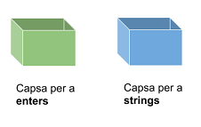

Tipus i variables
Declaració i inicialització
Una variable és un espai reservat a la memòria per a
emmagatzemar valors d'un tipus particular: un string, un número, o altres.
Cada variable té un nom (o identificador)
per a distingir-la d'altres. Abans d'utilitzar una variable, l'has de declarar.
La forma general de declarar una variable és així:
TipusDada nomVariable = inicialitacio;
La part esquerra d'aquesta sentència descriu la variable, i la part dreta
descriu el valor que se li ha assignat.
- El tipus de la variable determina quines possibles
operacions es poden realitzar sobre la variable i quins valors es poden
guardar en ella. Aquí hem utilitzat un tipus de dada que no existeix
(TipusDada) per a demostrar la forma general de declaració.
- El nom (o identificador) distingeix
la variable de les altres. El nom d'una variable no pot començar amb un dígit;
normalment comença amb una lletra. Sempre s'ha de tractar de escollir noms
amb significat i que siguin legibles per a fer el codi més fàcil d'entendre.
- L'operador d'assignació denotat amb = s'utilitza
per a assignar un valor o un resultat d'una expressió a una variable.
- La inicialització és un valor que se li assigna a una
variable.
D'acord amb això, podem declarar una variable de tipus String i
assignar-li la paraula java:
String llenguatge = "java";

També podem declarar una variable de tipus int i guardar en ella un
número enter:
int nombreDePomes = 5;

Lés majúscules i minúscules importen! No és el mateix llenguatge
que Llenguatge.
Les variables no solament poden emmagatzemar strings i enters, sinò també
caracters, booleans, decimals, i altres tipus que veurem més endavant.
Una forma habitual d’entendre les variables és imaginar una variable com una capsa
on s’hi emmagatzema una dada o valor.
Així, hi ha capses de diferents colors, per a emmagatzemar diferents
tipus de dades.
Per exemple, capses blaves per a String i capses verdes per a int:

A les capses se'ls hi ha de posar un identificador per
a distingir-les. L'identificador ha de descriure la dada que s'hi guardarà.

Per exemple, si es volen guardar el nom i l'edat d'una persona, es poden
tenir aquestes capses:

En cadascuna d'elles s'emmagatzema el valor corresponent:
 String nom = "Joan";
int edat = 24;
String nom = "Joan";
int edat = 24;
És un error tractar de guardar un tipus de dada en el tipus
de capsa inadequat:
 int edat = "Joan"; // error!, la variable és int i el valor string
int edat = "Joan"; // error!, la variable és int i el valor string
Per una altra banda, és vàlid posar els identificadors que
desitjem a les capses, però s'entendrà millor si posem un nom que descrigui
la dada que s'hi ha de guardar:
 int nom = 24; // vàlid! però no té sentit ¿?¿?
int nom = 24; // vàlid! però no té sentit ¿?¿?
Resol aquest problema:
Declaració invàlida de variables
Accedir al valor d'una variable
Un cop una variable ha estat declarada, el seu valor pot ser accedit i
modificat utilitzant el seu nom (identificador). En aquest exemple, declarem
una variable i després l'imprimim:
String diaDeLaSetmana = "Dilluns";
System.out.println(diaDeLaSetmana); // Dilluns
També es possible assignar el valor d'una variable a una altra variable. A la
línia 2 d'aquest codi estem assignant a avui el valor de diaDelMes:
int diaDelMes = 25;
int avui = diaDelMes;
System.out.println(avui); // 25
System.out.println(diaDelMes); // 25

És important notar que no es perd el valor d'una variable quan l'assignem a una altra variable.
Una característica important de les variables és que el seu valor pot canviar.
No s'ha de tornar a declarar la variable per a canviar-li el valor; únicament
se li ha d'assignar el nou valor utilitzant l'operador =.
Anem a declarar una variable anomenada diaDeLaSetmana i imprimirem
el seu valor abans i després de canviar-li'l:
String diaDeLaSetmana = "Dilluns";
System.out.println(diaDeLaSetmana); // Dilluns
diaDeLaSetmana = "Dimarts";
System.out.println(diaDeLaSetmana); // Dimarts
Hi ha una restricció en les variables: només pots assignar un valor del mateix
tipus que el tipus inicial de la variable. Així, el següent codi és incorrecte
int dia = 10; // ok
dia = 11; // ok
dia = "Dilluns"; // error! El tipus inicial era int
Exercicis:
Assignacions
Completa la declaració
Formes alternatives de declaració
Hi han vàries formes alternatives de declarar variables que són menys
utilitzades en la pràctica. Aquí hi han alguns exemples:
-
Declarar vàries variables del mateix tipus
en una única sentència separant-les amb comes ,
String llenguatge = "java", versio = "8 o superior";
-
Separar la declaració i la inicialització:
int edat; // declaració
edat = 18; // inicialització
-
A la línia 1, reservem un espai a la memòria
per a guardar un int i l'identifiquem amb edat.

-
A 2 estem assignant el valor 18 en la zona
de memòria reservada per a la variable edat.
Tipus de variables
A la documentació oficial d'Oracle pots trobar els
tipus de dades del llenguatge Java.
En aquest curs utilitzarem més sovint els següents:
- int
- float
- boolean
- char
- String
A la següent taula pots veure els valors que permeten guardar aquests tipus de dades:
| Tipus | Valors permesos |
| int | un número enter (entre -2_147_483_648 i 2_147_483_647) |
| float | número decimal (e.g. 123.975f) |
| boolean | un booleà (true / false) |
| char | un caracter (entre cometes simples, e.g. 'a') |
| String | un string (entre cometes dobles, e.g. "java") |
Aquí tens un exemple de declaració d'una variable de cada tipus:
int edat = 18;
float notaMitjana = 8.75f;
boolean estaMatriculat = true;
char grup = 'A';
String email = "alumne@ins.com";
Inferència de tipus
A partir de Java 10, es pot escriure var en lloc d'un tipus específic
per a forçar la inferència de tipus basada en el tipus del valor assignat.
var nomVariable = inicialització;
Aquí tens dos exemples:
var llenguatge = "java"; // String
var versio = 10; // int
En aquest curs no utilitzarem la inferència de tipus, ja que utilitzarem
fonamentalment la versió 8 de Java, que de moment segueix sent la més
utilitzada.
Donada la següent declaració d'una variable:
String speed = "high";
Quin és el nom de la variable?
speed
"high"
high
String
Donat el següent codi:
int a = 10;
int b = 12;
int c = b;
int d = a;
int e = c;
Introdueix el valor de la variable e.
12
Escriu el valor de cada variable, després de que s'executi
cada sentència
| a | b | c |
| int a = 0; | 0 | | |
| int b = 0; | 0 | 0 | |
| a = 2; | 2 | 0 | |
| int c = b; | 2 | 0 | 0 |
Quin és el valor d'aquesta variable?
String animal = "tigre";
"animal"
"String"
animal
tigre
L'operador d'assignació en Java és:
<-
=
:=
->
Selecciona les afirmacions correctes sobre les variables.
Una variable té un tipus específic
El tipus determina el nom d'una variable
No es pot assignar un valor a una variable
Es pot llegir el valor d'una variable
Quantes variables s'han declarat al següent codi?
int i = 0, j = 0, k = 0;
String s = "s", str = "str";
5
Selecciona les declaracions vàlides
float aFloat = "23.75f";
String mFloat = "98.7";
int cFloat = 44.3;
String kFloat = float;
char dFloat = '.';
String tFloat = "float";
El següent codi:
boolean turnedOn = true;
turnedOn = false;
String turnedOff = turnedOn;
System.out.println(turnedOff);
Imprimeix false
Imprimeix true
S'executa però dona un error
No es pot executar
Resol aquests problemes:
Tipus correctes
Valors correctes
Noms correctes
Anomenar variables
Per què el nom és important?
Com ja saps, cada variable té un nom que l'identifica de forma única respecte a les
altres variables. Donar un bon nom a una variable potser no és tan simple com sembla.
Els programadors amb experiència posen molt de compte en posar els noms per a fer els
seus programes més fàcils de comprendre. És molt important perquè els programadors
dediquen molt de temps a llegir i comprendre programes escrits per altres programadors.
Si les variables tenen noms dolents, inclús el teu propi codi et semblarà poc clar en uns
pocs mesos.
Sempre tracta de ser descriptiu i concís al posar nom a les variables. A la llarga
ho agrairàs.
A més a més, per a posar noms has de seguir les regles i les convencions.
Regles per a anomenar variables
Les regles de Java per als noms de variables són:
- distingeix majúscules i minúscules
- pot incloure lletres Unicode, digits, i els caracters $ _
- no pot començar per un dígit
- no pot ser una paraula-clau (class, static, void, int, són il·legals)
En base a aquestes regles, pots concloure que els espais en blanc no estan permesos en el nom
d'una variable.
Si trenques alguna d'aquestes regles el teu programa no funcionarà
Aquí tens alguns exemples de noms vàlids:
numero, $ident, bigValue, _val, abc, k
Aquests són invàlids:
@ab, 1c, !ab, class
Convencions per a anomenar variables
També hi ha una sèrie de convencions per a anomenar variables en Java:
- si el nom de la variable és una única paraula, s'escriu en minúscula (e.g.
numero, preu)
- si el nom de la variable inclou vàries paraules, s'han d'escriure en
lowerCamelCase, això és, la primera paraula ha de ser en minúscula i la resta
han de tenir la primera lletra en majúscula (e.g. numeroDeMonedes)
- no han de començar per $ ni per _, encara que estigui permés
- escull noms amb significat, e.g punts té més sentit que p, tot i
que els dos són vàlids.
Aquestes convencions són opcionals, tot i que es recomana seguir-les. Com hem dit
al principi, aquestes convencions faran el teu programa més legible per a tu i per
als altres programadors Java.
Vols declarar una variable anomenada int.
Determina si el nom es vàlid o no (i per què?). Un nom és valid si el programa funcionarà.
Es nom és vàlid
El nom no és vàlid perquè no té sentit (què és int?)
El nom no és vàlid perquè comença per una lletra
El nom no és vàlid perquè és una paraula-clau
Selecciona els noms de variable vàlids, és a dir, que el programa funcionarà.
1poma
numero1
boolean
_var
Recordes les convencions per anomenar variables? Fes que la variable
ALTURA@CACTUS no solament sigui sintàcticament correcta, sinò
que també compleixi les recomanacions.
alturaCactus
Quin és el millor nom per una variable d'acord amb les convencions?
_uha
userHomeAdress
userhomeaddress
user_home_address
UserHomeAddress
Escanejar l'entrada
L'entrada estàndard és un flux de dades que van cap al programa.
Està suportada pel sistema operatiu. Per defecte, l'entrada estàndard obté les dades del
teclat, tot i que és possible redirigir-la per a obtenir les dades d'un fitxer.
De fet, no tots els programes utilitzen l'entrada estàndard. Però nosaltres l'utilitzarem
molt sovint per a demanar dades als usuaris per teclat, o per a obtenir les dades dels casos
de prova en els exercicis.
La forma típica en que resoldrem problemes és aquesta:
Llegir dades de l'entrada estàndard (System.in)
Processar les dades per a obtenir un resultat
Imprimir el resultat a la sortida estàndard (System.out)
Aquest tipus de problemes de programació es poden provar fàcilment amb diferents
formats de dades d'entrada, i per aquest motiu, els utilitzarem molt.
Llegir dades amb un scanner
La forma més simple d'obtenir dades de l'entrada estàndard és utilitzar la
classe Scanner. Permet als programes llegir valors de diferents tipus
(strings, números, etc.) de l'entrada estàndard.
Per a utilitzar la classe Scanner s'ha d'afegir aquesta sentència d'importació
al principi del fitxer de codi:
import java.util.Scanner;
Després s'ha d'afegir aquesta construcció a dintre del mètode main:
Scanner scanner = new Scanner(System.in);
En aquesta línia hem creat un objecte de la classe Scanner, que ens
permet utilitzar els seus mètodes. Aprendrem més sobre classes i objectes més
endavant. System.in indica que es llegirà el flux de dades de l'entrada
estàndard (habitualment, el teclat). De moment, no és necessari que comprenguis aquesta línia, solament
escriu-la exactament així.
Anem a escriure el primer programa que llegeix dades del teclat:
Prova a escriure i executar aquest programa a l'IntelliJ.
import java.util.Scanner;
public class Main {
public static void main(String[] args) {
Scanner scanner = new Scanner(System.in);
System.out.println("Hola, com et dius?");
String nom = scanner.nextLine();
System.out.print("Hola ");
System.out.print(nom);
System.out.println("!");
}
}
Quan l'executem, veurem el següent (en verd es mostra l'entrada
introduïda per teclat):
Hola, com et dius?
Josep Ramon
Hola Josep Ramon!
Veiem pas a pas, l'execució del programa:
- A 1 importem la classe Scanner
- A 6 creem l'objecte scanner que s'utilitza per llegir
dades introduïdes per teclat.
- A 10 utilitzem el mètode nextLine() per a llegir una
línia de dades del teclat. Guardem les dades llegides a la variable nom
- A 13 imprimim la variable nom, que conté les dades que s'han
llegit a 10
Mètodes de la classe Scanner
Hi ha diversos mètodes a la classe Scanner que ens permeten llegir
diferents tipus de dades de l'entrada estàndard. En aquesta taula tens un
resum dels mètodes que més utilitzarem en aquest curs:
| Mètode | Tipus | Utilitat |
|---|
| nextInt() | int | llegeix un número enter |
| nextFloat() | float | llegeix un número decimal |
| nextBoolean() | boolean | llegeix un valor booleà |
| next() | String | llegeix una paraula |
| nextLine() | String | llegeix fins al final de línia |
Quan llegim dades utilitzant aquests mètodes hem d'utilitzar les variables del tipus
adequat per a guardar la dada que es llegeix. Per exemple:
import java.util.Scanner;
public class Main {
public static void main(String[] args){
Scanner scanner = new Scanner(System.in);
int quantitat = scanner.nextInt();
float preu = scanner.nextFloat();
boolean pagat = scanner.nextBoolean();
String codi = scanner.next();
String nom = scanner.nextLine();
System.out.println(quantitat);
System.out.println(preu);
System.out.println(pagat);
System.out.println(codi);
System.out.println(nom);
}
}
5 1,99 true PR101 Galetes Maria
5
1.99
true
PR101
Galetes Maria
Observa que el preu introduït per teclat s'ha escrit utilitzant una coma
, en lloc d'un punt . per a separar les xifres decimals
(1,99 en lloc de 1.99). Això es degut a que l'Scanner
utilitza l'idioma del Sistema Operatiu per al format d'entrada, i en
castellà/català els decimals es separen amb una coma ,. Si tinguèssim el
Sistema Operatiu configurat en anglès, caldria haver introduït el número decimal
utlitzant un punt.
Es pot forçar a l'Scanner a utilitzar l'idioma anglès per al format de dades
d'entrada, és a dir, a utilitzar el punt en els decimals. Ho podem fer amb
el mètode setLocale(), just després de crear l'scanner, així:
Scanner scanner = new Scanner(System.in);
scanner.useLocale(Locale.US); // usar el format angles
Per contra, els mètodes print() i println() sempre imprimeixen
separant els decimals amb un punt.
Hem vist que cal utilitzar el tipus de variable adequat
al mètode que utilitzem per a llegir. Si no utilitzem el tipus adequat, el programa
no s'executarà. Per exemple, no podem utilitzar una variable de tipus String
per a guardar un valor llegit amb nextInt():
String a = scanner.nextInt(); // error, cal utlitzar el tipus int
Per sort, l'IDE ens ajuda a detectar i solucionar aquests errors, indicant en
subratllat vermell l'error i proporcionant ajuda sobre com solucionar-lo:

InputMismatchException
Una altre error que pot ocòrrer és que l'usuari no introdueixi una dada que
correspongui amb el tipus que s'ha de llegir. En aquest cas, el programa donarà
una excepció i s'aturarà inesperadament.
Per exemple, el següent programa tracta de llegir un enter del teclat, però
l'usuari introdueix un text (holaaa). L'execució del programa s'abortarà amb una excepció
de tipus InputMismatchException:
System.out.println("Introdueix un número:");
int numero = scanner.nextInt();
Introdueix un número:
holaaa
Exception in thread "main" java.util.InputMismatchException
at java.base/java.util.Scanner.throwFor(Scanner.java:939)
at java.base/java.util.Scanner.next(Scanner.java:1594)
at java.base/java.util.Scanner.nextInt(Scanner.java:2258)
Més endavant veurem com prevenir aquestes situacions, i fer el nostre
programa resistent a qualsevol entrada que introdueixi l'usuari.
Consumir dades de l'entrada
Les crides als mètodes de lectura de l'scanner van consumint dades de l'entrada
sempre que hi hagi, i si no hi han dades esperaran fins que hi hagin.
Vegem-ho amb un exemple. Aquest programa llegeix dos números de l'entrada:
System.out.println("Introdueix el primer número:")
int a = scanner.nextInt();
System.out.println("Introdueix el segon número:")
int b = scanner.nextInt();
System.out.println("Els números introduïts són:")
System.out.println(a);
System.out.println(b);
Quan executem el programa, la primera crida a nextInt() 2, quedarà
esperant a que l'usuari introdueixi un número. Si l'usuari introdueix un únic
número, aquest serà consumit de l'entrada i assignat a la variable a.
Quan es fa la segona crida a nextInt() 4, el programa tornarà a esperar
a que s'introdueixi un altre número.
Introdueix el primer número:
1234
Introdueix el segon número:
6789
Els números introduïts són:
1234
6789
Però, si a la primera crida a nextInt() 2, l'usuari introdueix
dos números, el primer d'ells serà consumit per l'scanner i assignat a la
variable a, i el segon número quedarà pendent per consumir. Així, a la segona crida
a nextInt() 4, l'scanner no esperarà a que s'introdueixi un
altre número, sinò que consumirà el número que havia quedat per consumir i quedarà
assignat a la variable b sense esperar a que s'introdueixi un altre número.
Introdueix el primer número:
1234 6789 // introdueix dos numeros
Introdueix el segon número: // consumeix el segon número
Els números introduïts són:
1234
6789
Hi ha situacions en què és una mica enrevesada la lectura de dades. Cal tenir en
compte la posició del cursor i la forma en que llegeixen les dades els mètodes.
El primer a tenir en compte és que tots els mètodes, excepte el nextLine(),
descarten qualsevol espai-en-blanc o salt-de-línia que troben al flux de dades de l'entrada,
fins que troben una dada per a llegir. Per contra, nextLine(), llegirà tots els
caracters (incloent espais-en-blanc) fins que trobi un salt-de-línia (que descartarà).
Vejem els comportaments d'aquests mètodes amb varis exemples. Al flux de dades
d'entrada indicarem els espais-en-blanc amb el símbol ␣ i els salts-de-línia
amb el símbol ⏎.
Exemple 1
Veiem un exmple amb el mètode nextInt(). Si tenim aquest programa:
int a = scanner.nextInt();
i al flux d'entrada s'introdueix el següent:
␣␣␣␣␣␣␣␣1234␣␣␣␣␣␣␣␣6789⏎
el mètode nextInt() descartarà els espais-en-blanc que hi ha al principi,
i llegirà unicament el número 1234. Els espais-en-blanc de després i el
número 6789 quedaran a l'espera de ser consumits.
␣␣␣␣␣␣␣␣1234␣␣␣␣␣␣␣␣6789⏎
-
Exemple 2
Si tenim aquest programa:
boolean a = scanner.nextBoolean();
float b = scanner.nextFloat();
String c = scanner.next();
int d = scanner.nextInt();
String e = scanner.nextLine();
i al flux d'entrada tenim el següent:
␣␣␣true␣␣⏎
␣14.5␣␣␣hola␣␣⏎
␣␣2345␣␣␣que tal?␣␣⏎
La crida a nextBoolean() descartarà els espais/salts fins a llegir
la dada true:
␣␣␣true␣␣⏎
␣14.5␣␣␣hola␣␣⏎
␣␣2345␣␣␣que tal?␣␣⏎
La crida a nextFloat() descartarà els espais/salts fins a llegir
la dada 14.5:
␣␣␣true␣␣⏎
␣14.5␣␣␣hola␣␣⏎
␣␣2345␣␣␣que tal?␣␣⏎
La crida a next() ignorarà els espais/salts fins a llegir
la dada hola:
␣␣␣true␣␣⏎
␣14.5␣␣␣hola␣␣⏎
␣␣2345␣␣␣que tal?␣␣⏎
La crida a nextInt() ignorarà els espais/salts fins a llegir
la dada 2345:
␣␣␣true␣␣⏎
>␣14.5␣␣␣hola␣␣⏎
␣␣2345␣␣␣que tal?␣␣⏎
La crida a nextLine() no descartarà els espais i llegirà
la dada ␣␣␣que tal?␣␣, però sí que descartarà el salt-de-línia:
␣␣␣true⏎
14.5␣␣␣hola␣␣⏎
␣␣2345␣␣␣que tal?␣␣⏎
Exemple 3
Aquest exemple mostra una situació que és una font de confusió
molt comuna quan s'està aprenent a utilitzar l'Scanner.
Considera el següent programa:
import java.util.Scanner;
public class Main {
public static void main(String[] args){
Scanner scanner = new Scanner(System.in);
System.out.println("Introdueix un número:");
int numero = scanner.nextInt();
System.out.println("Introdueix un text:");
String text = scanner.nextLine();
System.out.println("El numero és " + numero);
System.out.println("El text és " + text);
}
}
Abans de seguir amb l'exemple, és interessant que escriguis aquest programa
i l'executis a l'IDE.
Si has executat aquest programa, veuràs una comportament força extrany. El programa llegeix
correctament el número que introduïm 8, però es "salta" la lectura del text 10!
Introdueix un número:
1234
Introdueix un text:
El numero és 1234
El text és
Veiem perquè ocorre això i com corregir-ho.
Quan introduim un número i després polsem Intro, les dades que estem
posant a l'entrada estàndard són el número i un salt-de-línia:
1234⏎
La primera crida a nextInt() 8 llegeix el número, però no descarta el salt-de-línia:
1234⏎
La següent crida a nextLine() troba el salt-de-línia i el descarta. Per tant el que ha llegit
és un String buit, i per això no ha esperat a que s'introdueixin més dades a l'entrada.
1234⏎
La forma de corregir aquest error, és realitzar un nextLine() extra per
a que consumeixi el salt-de-línia que hi ha a continuació del número. El programa quedaria així:
System.out.println("Introdueix un número:");
int numero = scanner.nextInt();
scanner.nextLine(); // consumim el salt-de-linia
System.out.println("Introdueix un text:");
String text = scanner.nextLine();
D'aquesta manera el primer nextInt() 2 llegirà el número:
1234⏎
El següent nextLine() 3 descartarà el salt-de-línia
1234⏎
Com ja no queden dades a consumir a l'entrada, el nextLine() 5 esperarà
a que s'introdueixin més dades a l'entrada.
Com a norma general, quan llegim dades línia a línia,
haurem de posar un nextLine() extra
enmig d'un
nextInt(), nextBoolean(), nextFloat() o next(),
i un
nextLine().
-
Exemple 4
L'últim exemple que veurem també és una situació que sovint costa de resoldre, i que
es dona quan llegim diferents dades en una mateixa línia.
Considerem aquest programa:
System.out.println("Introdueixi la seva edat i el seu nom:");
int edat = scanner.nextInt();
String nom = scanner.nextLine();
System.out.println("Edat:");
System.out.println(edat);
System.out.println("Nom:");
System.out.println(nom);
Introdueixi la seva edat i el seu nom:
24 Joan Ramon
Edat:
24
Nom:
Joan Ramon
En aquest programa, l'usuari introdueix l'edat i el nom a la mateixa línia. L'edat es llegeix correctament
però observa l'espai-en-blanc que s'ha llegit abans del nom.
La crida a nextInt() 2 ha llegit el número, i ha deixat el cursor just a continuació:
24␣Joan␣Ramon⏎
Com el nextLine() 3 no descarta els espais, ha llegit els caracters restants fins el salt-de-línia.
24␣Joan␣Ramon⏎
Per a corregir aquesta anomalia, podem utilitzar el mètode trim(), que elimina els espais
en blanc al principi d'un text. Així, quan vulguem llegir una línia, i estar segurs de que no tindrem
espais molests al principi, ho podem fer així: nextLine().trim().
El programa quedaria així:
System.out.println("Introdueixi la seva edat i el seu nom:");
int edat = scanner.nextInt();
String nom = scanner.nextLine().trim(); // eliminem els espais al principi
System.out.println("Edat:");
System.out.println(edat);
System.out.println("Nom:");
System.out.println(nom);
Fes coincidir els mètodes de la classe Scanner amb el tipus de valor que llegeixen.
nextInt()int
nextBoolean()boolean
nextFloat()float
next()String
Invoquem el mètode next() i introduïm el número 9 a l'entrada estàndard, quin tipus
de dada serà?
String
char
int
float
Hello you
Cada paraula a una línia
Contractar un xef
Carta formal
Arxius de codi font
Completa l'Etapa 2 del projecte ChatBOT